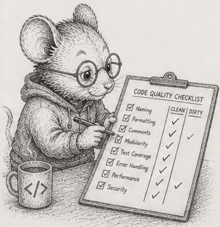

53 - Staleness flows downhill

§52 left on a catch: compiling a tree is worth it only when the shape changes rarely and all at once. This chapter is the other case, the common one - the shape changes a little, and constantly.
Picture a jointed arm: a shoulder, an elbow hanging off it, a hand hanging off the elbow. Each joint knows only where it sits relative to its parent - its local offset. Where it actually is in the room - its world position - is its parent’s world position plus its own local offset. Lay it out and compute it from the top of the chain down:
shoulder local 0 world 0
elbow local +2 world 2 (0 + 2)
hand local +1 world 3 (2 + 1)
Now swing the elbow out: change its local offset from +2 to +5.
shoulder local 0 world 0 (unchanged)
elbow local +5 world 5 (0 + 5) <- moved
hand local +1 world 6 (5 + 1) <- dragged along
The elbow moved, and the hand moved with it, because the hand hangs off the elbow. The shoulder did not move at all. A change flows downhill to everything beneath it, and stops there. That is the whole idea of this chapter. (Real scenes compose full rotate-scale-translate transforms instead of adding offsets, but the shape is identical: a node’s world position depends only on itself and the chain of parents above it.)
Every frame, things move, and the world positions below them go stale. There are two ways to set them right.
Recompute everything. Recompute every world position from scratch, top-down. In Python you cannot do this as one numpy call, because each node needs its parent’s world before it can compute its own - a dependency chain, not an independent column. But you can do it one depth level at a time: every node at depth d has a parent at depth < d, already final, so a whole level composes in a single vectorised batch. The number of Python-level iterations is the tree’s depth, not its node count - a few dozen passes over wide arrays, not a million passes over scalars.
Recompute only the stale part. When the elbow moves, mark the elbow and everything beneath it as dirty, and recompute only those, again level by level. The pre-order layout has a gift here: lay the nodes out so a node is immediately followed by all of its descendants, and a whole subtree becomes a contiguous slice - “everything beneath the elbow” is a range of array positions, packed together in memory.
Which one wins? It depends on how much went stale, and the answer is a crossover, not a rule.
Vectorise by level, or pay the interpreter per node
§52’s lesson reappears first, and in Python it is stark. Recompute everything the per-node way - a Python loop composing one node at a time - and you pay the interpreter once per node. Recompute it level by level, each level one vectorised batch, and the level-vectorised sweep beats the scalar loop by 26x to 51x from ten thousand to a hundred thousand nodes, on identical work and bit-identical answers.1 The Rust edition gets 2.3x-2.8x from laying the same tree out flat; Python gets an order of magnitude more, for the same reason as last chapter - the cost it removes is the interpreter, not the cache. Even the dumb option, recompute-all, is cheap once it is vectorised. Hold that as the baseline.
Recompute-only-what-moved has a ceiling
Now mark a fraction of the tree dirty - a joint and everything below it - and recompute only that part, against the vectorised recompute-all. When little has moved, recomputing only the stale part wins enormously: at a tenth of a percent dirty it is about 510x faster, at one percent about 180x, at ten percent about 18x, at twenty percent about 5x.2
It does not win forever. The advantage shrinks as more goes stale - about 1.6x at forty percent, barely ahead at sixty - and past roughly two-thirds dirty the vectorised recompute-all takes the lead. At a hundred percent dirty the incremental version is slower than the full sweep: it does all the same work, plus it cannot reuse the clean level arrays the full sweep keeps, so its gather and scatter run over a worse-ordered index set. Recompute only what changed is a default with a ceiling - when most of it changed, stop being clever and sweep. (The ceiling sits higher than the Rust edition’s ~40-50%, because a vectorised recompute of a contiguous dirty subtree stays cheap deeper into the tree than a scalar one does.)
Whether it pays depends on whether the stale set is packed
A second axis matters more for the next chapter. Take the same number of dirty nodes and arrange them two ways: as one contiguous subtree (a joint and everything below it), and scattered all over the tree (a dirty leaf here, a dirty leaf there).
The contiguous subtree recomputes about 4.4x faster than the same count of scattered nodes, at identical work.3 The dirty count was the same; only the packing differed. Both paths gather each node’s parent transform and scatter the result, but for the contiguous subtree those gathers and scatters stay inside one local range of memory, while the scattered set hops the whole array and misses cache on every access. (The Rust edition measures this gap at ~10x; in numpy it is smaller, because the fixed overhead of fancy indexing dilutes it - but the locality still decides.) Recomputing the stale part pays best when the stale part is packed together, so the recompute streams instead of hopping. That sharpens §28’s “recompute beats maintain”: recompute beats maintain when the thing you recompute is local.
A scenegraph is kind to this. It is a tree: every node has exactly one parent, so “everything beneath a node” is one packed slice, and the common edit - move a joint - dirties exactly such a slice. The reference module is code/scenegraph/scenegraph.py.
But that kindness is the tree’s, not the world’s. The moment a thing can feed many things instead of hanging off one parent - the moment your dependencies form a graph rather than a tree - there is no single “everything beneath it,” no contiguous slice to recompute, and the packing you just relied on is gone. That graph is a spreadsheet, and it is the next chapter.
A note on layout: this is the arc’s point
The transform here is a six-number affine, and a node always reads all of its parent’s world to write all of its own. So the right grain is six arrays composed together as a unit - not, say, splitting each number into its own independently streamed column, which would buy nothing because they are never touched apart. Columns are a default, not a law: the SoA reflex serves you when fields are read independently and gets in the way when they move as a unit. The win in this chapter was never “more columns”; it was vectorise the level and keep the dirty set packed.
Measurements
Dev box: Ryzen 9 270, CPython 3.14.5, numpy 2.4.4, median of 3. Cross-machine capture is pending; treat the shape as the claim.
| # | what | measured |
|---|---|---|
| 1 | full recompute: level-vectorised vs scalar per-node (10K-100K) | 26x - 51x |
| 2 | recompute-dirty vs recompute-all, by dirty fraction (1M) | ~510x at 0.1%, 18x at 10%, 5x at 20%, loses past ~2/3 |
| 2 | recompute-dirty at 100% dirty | 0.6x (slower than the sweep: bookkeeping plus worse index order) |
| 3 | same dirty count: contiguous subtree vs scattered (1M) | 4.4x apart |
Exercises
- Move a joint by hand. Take the three-node arm from the chapter. Pick local offsets, compute the world positions, then change one joint’s local offset and recompute by hand. Write down which world positions changed and which did not, and state the rule in one sentence.
- Flat, top-down, by level. Store a hierarchy as arrays with each node’s parent and depth recorded, laid out so every parent comes before its children. Group the node indices by depth. Write the full recompute as one vectorised batch per level, and confirm each node’s parent is always already final by the time its level runs.
- The vectorised sweep vs the per-node loop. Write the full recompute a second way, as a Python loop composing one node at a time. Recompute both at ten thousand and a hundred thousand nodes and reproduce the 26x-to-51x gap. Say in one line why it appears, in the words of §52.
- The subtree is a slice. With the pre-order layout, show that a subtree occupies a contiguous range of positions (record each node’s subtree size as you build). Given a node, find “everything beneath it” as a slice, with no tree-walking.
- The dirty crossover. Mark a contiguous subtree dirty, recompute only it (level by level), and compare against the full vectorised sweep. Sweep the dirty fraction and find where recompute-everything takes over. Explain why the incremental version is slower than the sweep when everything is dirty, even though it does the same arithmetic.
- Packed versus scattered. Hold the dirty count fixed and compare one contiguous subtree against the same number of scattered single nodes. Reproduce the ~4.4x gap. State the condition under which recomputing the stale part is worth doing at all, and say why numpy narrows the gap the Rust edition sees at ~10x.
- (stretch) Break the tree. Let one node be read by two parents (so it is no longer a tree). Show that “everything beneath a node” is no longer a single contiguous slice, and that the packed recompute you relied on no longer applies. You have just discovered the next chapter’s problem.
Reference notes in 53_dirty_propagation_solutions.md.
What’s next
In a tree, the stale set is always one packed slice, because everything has exactly one parent. §54 is what happens when that is no longer true: a spreadsheet, where one cell feeds many, the dependencies form a graph, and “what went stale” is a shape you have to compute rather than a slice you can point at.